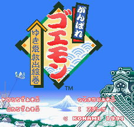
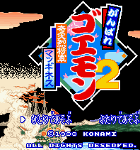
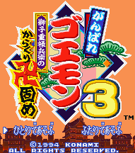
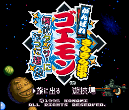

SNES Games - Ganbare Goemon

Controls
- A button: Use Weapon
- B button: Jump
- X button: [not used]
- Y button: Use Weapon
- L button: [not used]
- R button: Change Weapons
- Start: Pause
- Select: Inventory
This is just like every other Goemon game released. You run around the level bashing the enemies that come
your way in a Zelda-like persepctive. This game was released by Konami in the US as Legends of the Mystical
Ninja. Wepons that are available include coins, bombs, a cane, a yo-yo (Kid Ying), and a flute (Ebisumaru
and Dr. Yang).

Controls
- A button: Use Weapon
- B button: Jump
- X button: [not used]
- Y button: Use Weapon
- L button: [not used]
- R button: Select Weapon
- Start: Pause
- Select: [not used]
This game departs from the normal gameplay of previous Goemon games. It is a Mario-style platform game where
you can choose from Goemon or two other characters to control as you run through the levels.

Controls
- A button: Jutsu/Shoot (on walker) if Weapon is Fire or Ice/Shoot Gold Coins (on giant robot)
- B button: Jump/Heavy Punch (on giant robot)
- X button: Use Bomb (on giant walker)
- Y button: Use Weapon/Punch (on walker)/Light Punch (on giant robot)
- L button: Change Weapon/Block Left (on giant robot)
- R button: Change Weapon/Block Right (on giant robot)
- Start: Pause
- Select: Change Character
This is not like every other Goemon game released; it plays more like a Zelda RPG. You run around the level
bashing the enemies that come your way. There is a new feature to this game; you start out with Goemon plus a friend.
Pressing Select will change between the two. The screen brought up by pressing Start shows that you
can pick up two other characters along the way.
The jutsu from the first game is back. This time it's permenant and free. However you have to pass the master's
training to get it (except for Sasuke's jutsu). To grab a small block press Forward + Y to grab the block; then
press Y again to throw it. To jump off the walker, press Up + B. Hold Y + a direction to get
the walker to dash in the facing direction. While on the giant robot, you take damage from bombs you throw, and the
strength of your heavy punch depends on the meter on top of the cockpit. -- from Jacob Poon (table below as well)
| Character |
Scroll Cost |
Effect |
| Goemon |
10 |
Temporary increases attack damages. |
| Ebisumaru |
0 |
Shrinks himself. Press A to restore. |
| Sasuke |
10 |
Fires eight projectiles around himself. |
| Yae |
0 |
Turns into mermaid. While in mermaid form, she can swim under water. Press Y
will dash and attack the enemy. Press A to restore. If you use it on land, she will be immobilized.
|

Controls
- A button: [not used]
- B button: Jump
- X button: [not used]
- Y button: Use Weapon
- L button: Change Weapon
- R button: Change Weapon
- Start: Pause
- Select: [not used]
This is just like every other Goemon game released. You run around the level bashing the enemies that come
your way. What makes this game unique are the characters and the setting. Apparently, Goemon has somehow been
transported to an alien version of feudal Japan. While the gameplay is not unique, seeing some of these aliens makes
it worth a second glance.
© 1997 - Luis A. Cruz